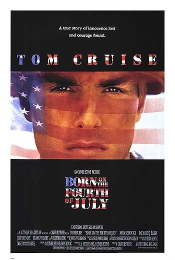
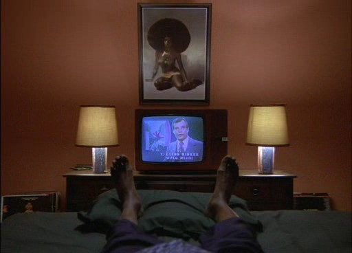
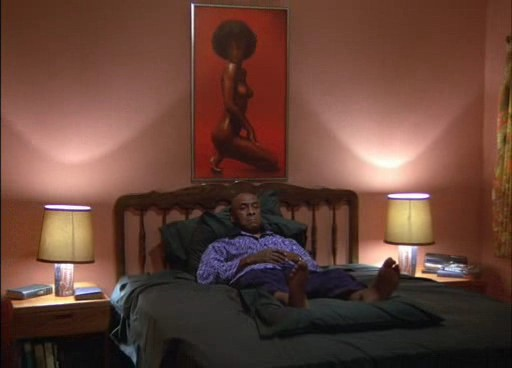

Oh yes, the Fourth of July.
Many great men have been born in this day. Unfortunately I can't
remember any ^_^ Ah yes, Tom Cruise.

How many times have you suffered that joke? Actually, If I had some
decent poster for this movie, I would have changed the name and the
flag background and filling, and made some with your pic and UK's flag.
Instead I only found this half-assed one, so you're out of luck.
It has to be a little odd to have your bday in the national day of USA.
I'd hate it personally. There are some movies related to this date,
some of them deal with USA's day, others do it with just the date (not
related to the USA). I'd like to focus on these movies. But among all
the movies
related to the Fourth of July listed on IMDB, I found one missing.
You might have seen it, and being your bday I bet something clicked in
your brain and you remember the little fact. If not, here's the
information IMDB doesn't want you to know about The Shining:


If you haven't seen The
Shining, tough luck, because this appears at the very end of the movie.
It's just one more of a lot of freaky facts, not like it's going to
ruin you the movie. But being the Fourth of July, I thought you should
have it present.
So my advice for today is rent this movie and watch the freaky clothes
used by the kid, the freaky afros of the playboy gals in Mr. Halloran's
room, the freaky actress they chose for the role, the freaky Jack
(always freaky) and everything freaky. If you haven't seen it, you
must. So you can understand why it's freaky that Jack is in that pic ^_^
So, Mr Halloran wish you a happy bday!


p.s. The book is freaky too,
written by Stephen "Freakyboy" King. Recommended.